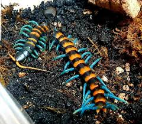

Ciempiés
Los ciempiés son artrópodos terrestres de cuerpo alargado y segmentado, conocidos por su rapidez y múltiples patas.
Características principales
Tamaño: Entre 3 mm y 30 cm, según la especie.
Peso: Varía según el tamaño y la especie.
Tienen un cuerpo segmentado con un par de patas por segmento.
Se encuentran en hábitats húmedos, como suelos forestales y debajo de rocas.
Son depredadores nocturnos que cazan pequeños insectos y otros invertebrados.
Alimentación
Los ciempiés son carnívoros y se alimentan de insectos, arañas y pequeños invertebrados. Usan sus colmillos venenosos para inmovilizar a sus presas.
Especies destacadas
Ciempiés gigante amazónico (Scolopendra gigantea)
Ciempiés doméstico (Scutigera coleoptrata)
Ciempiés tigre (Scolopendra polymorpha)
Curiosidades
¿Sabías que los ciempiés no tienen exactamente cien patas? La cantidad varía según la especie y siempre es un número impar.
⬅ Volver a la sección de insectos y arácnidos